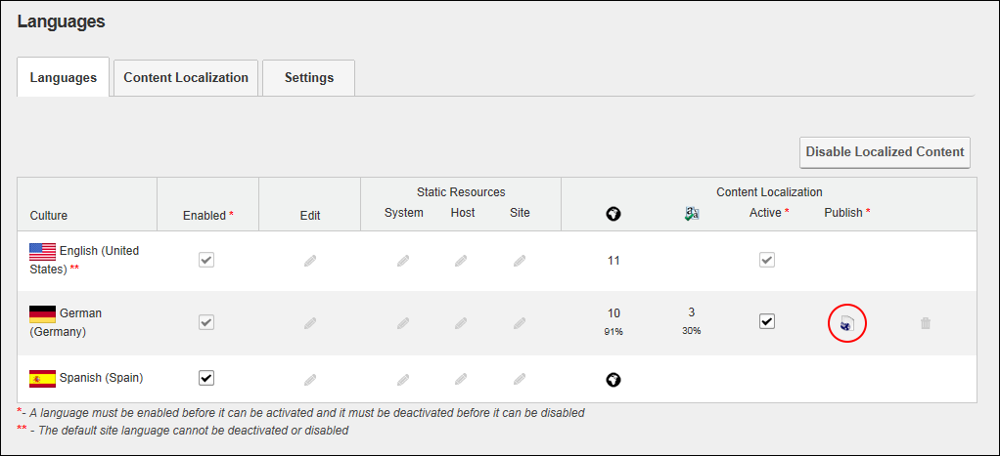

Publishing All Translated Pages for a Language
How to publish translated pages using the Languages module. Publishing only affects the pages that have been marked as translated (See "Setting a Page as Translated"). Once pages are published, the view permissions of published pages are updated to be the same as for the default language.
In DNN Platform, any user (including unauthenticated users) who has been granted Edit Module permissions. In users (including unauthenticated users, any user (including unauthenticated users) who has been granted Edit Content permissions.
A language must be set as "Active" before it can be published (See "Activating/Deactiving a Language"). Pages should be translated prior to publishing, See "Translating a Page"
- Navigate to Admin > Advanced Settings >
 Languages - OR - Go to a Languages module.
Languages - OR - Go to a Languages module.
- Select the Languages tab.
- In the Culture grid, go to the Content Localization - Publish column.
- Click the Publish Pages
 button. This displays the message "Would you like to publish all pages in the [selected] language?"
button. This displays the message "Would you like to publish all pages in the [selected] language?"

- Click the Yes button to confirm.